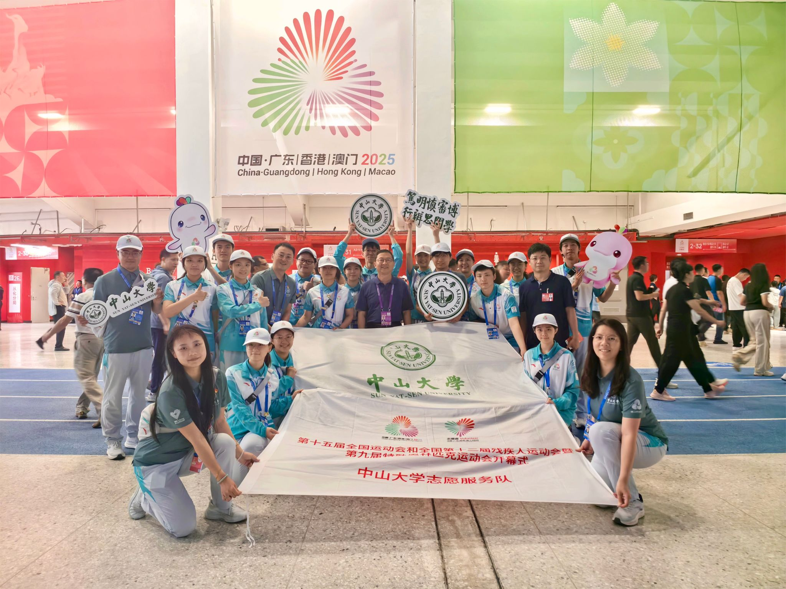
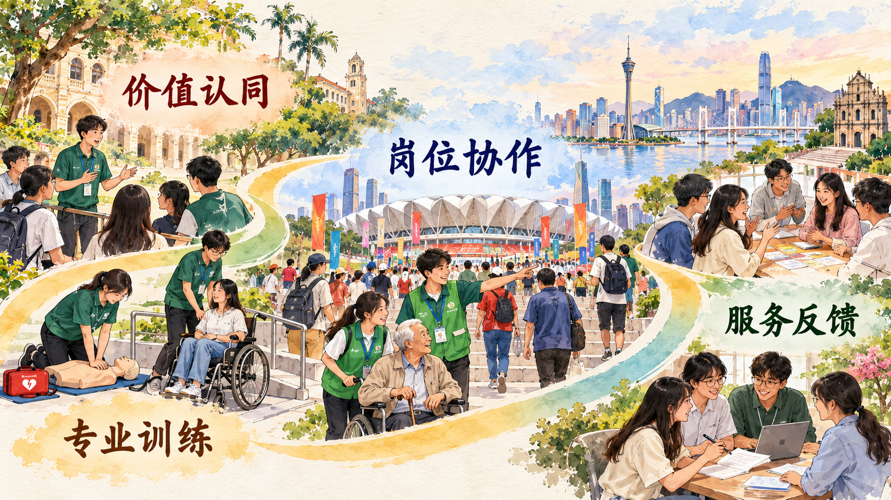

共同价值需要通过教育引导、制度保障和实践养成进入社会生活。社会主义核心价值观把国家发展目标、社会价值取向和公民行为准则连接起来，为不同群体共同生活、共同奋斗提供基本价值遵循。本节从价值观实践、精神谱系和社会文明程度三个方面展开。
一、广泛践行社会主义核心价值观
富强、民主、文明、和谐是国家层面的价值目标，自由、平等、公正、法治是社会层面的价值取向，爱国、敬业、诚信、友善是公民层面的价值准则。三个层次相互支撑：国家发展为个人成长创造条件，公平有序的社会制度规范公共关系，公民的责任行动使共同价值进入日常生活。
价值观教育重在落细、落小、落实。学校课程提供概念和判断，社会制度形成行为边界，志愿服务、专业实践和公共交往则让青年在真实任务中理解责任。勤学、修德、明辨、笃实，体现了知识学习、品德养成、判断能力和实际行动的统一。
参考资料｜志愿服务的制度支持
志愿服务的热情需要规范流程转化为可靠行动。招募环节明确岗位、时间和能力要求；培训环节教授安全、礼仪和专业技能；排班与指挥保证不同岗位协同；服务记录和反馈帮助改进；保险、休息和权益保障维护志愿者的持续参与。
大型赛会还需要场馆运行、医疗急救、无障碍服务、语言沟通和突发情况处置。志愿者在制度流程中承担清晰责任，友善和奉献获得稳定的行动形式。价值认同与专业能力相互结合，公共精神才能从一次热情参与转化为可持续的服务品质。
资料来源：国务院《志愿服务条例》；中山大学十五运会志愿服务培训与总结材料。
案例研究｜中大“小海豚”的赛会服务链
十五运会在粤港澳大湾区举行，中山大学 906 名志愿者分赴广州、深圳和珠海，427 人参加开幕式服务。观众进入场馆时看到的引导、问询和礼宾岗位，只是服务链的前端。志愿者在上岗前经过数月训练，需要认识场馆分区、熟悉岗位流程，学习礼仪沟通、AED 使用、心肺复苏和助残服务，并通过演练把个人动作放进大型活动的统一指挥中。
观众服务岗位需要在短时间内回答入口、座位、交通和设施问题。场馆运行岗位关注人员流线、物资位置和任务衔接。礼宾岗位面对来自不同地区的来宾，需要准确表达并处理临时需求。啦啦队和氛围引导同样需要遵守赛程与现场秩序。每个岗位的行动都很具体，敬业体现为提前熟悉流程，友善体现为耐心回应，责任体现为出现问题时按程序报告和协作。
39 名来自香港、澳门和台湾的中大学生参与志愿服务。香港学生姚政诺、澳门学生黄俊翰与广州同学发起粤语工作坊，来自不同地区的志愿者一起学习“早晨”“多谢”等常用表达。一次语言学习看似很小，却回应了真实服务场景：本地长者用粤语询问时，志愿者能够更快理解；跨地区青年共同学习时，也会从发音差异进入对地方文化和彼此生活经验的认识。

现场服务把训练转化为可观察的行动。一次准确引导减少观众等待，一次无障碍协助维护参与者尊严，一次跨岗位通报帮助场馆保持秩序。志愿者也在行动后形成新的经验：公共服务需要热情，还需要规则、技能和团队协作；共同价值通过这些具体行动进入大型赛会和湾区青年交往。
讨论题
- 赛会志愿者的热情需要经过哪些训练和制度安排才能转化为可靠服务？
- 粤语工作坊对服务质量和共同体意识分别产生了什么作用？
- 大学生参加一次大型活动以后，哪些经验能够继续进入校园和社区生活？
资料来源：中山大学《International Volunteer Day | SYSU Youth in Action》，2025 年 12 月 5 日；中山大学有关志愿服务培训材料。

二、弘扬以伟大建党精神为源头的中国共产党人精神谱系
伟大建党精神集中体现坚持真理、坚守理想，践行初心、担当使命，不怕牺牲、英勇斗争，对党忠诚、不负人民。中国共产党人在不同历史时期形成井冈山精神、长征精神、延安精神、抗美援朝精神、改革开放精神、脱贫攻坚精神等，具体情境和实践任务各有特点，理想信念、人民立场、担当精神和奋斗品格一脉相承。
学习精神谱系需要进入真实历史条件和人物行动。面对怎样的困难，作出怎样的选择，依靠怎样的组织和群众基础，产生怎样的历史结果，这些问题帮助学生理解精神形成于实践，也在新的实践中获得传承。精神教育同专业学习、社会调查和志愿服务结合，历史资源便能够转化为青年行动的价值力量。
三、提高全社会文明程度
社会文明程度体现在理想信念、道德水准、文明素养和公共行为之中。新时代公民道德建设、群众性精神文明创建、志愿服务和诚信建设共同营造崇德向善的社会风尚。网络空间也是社会生活的重要部分，理性表达、尊重事实、保护隐私和承担传播责任成为新的文明要求。
文明养成需要家庭、学校、社会和制度共同作用。明确公共规则，提供参与机会，表彰真实贡献，纠正失范行为，可以使文明理念进入日常选择。青年在课堂、社团、实习、网络和社区中的每一次公共行动，都能够成为观察社会文明程度的具体窗口。